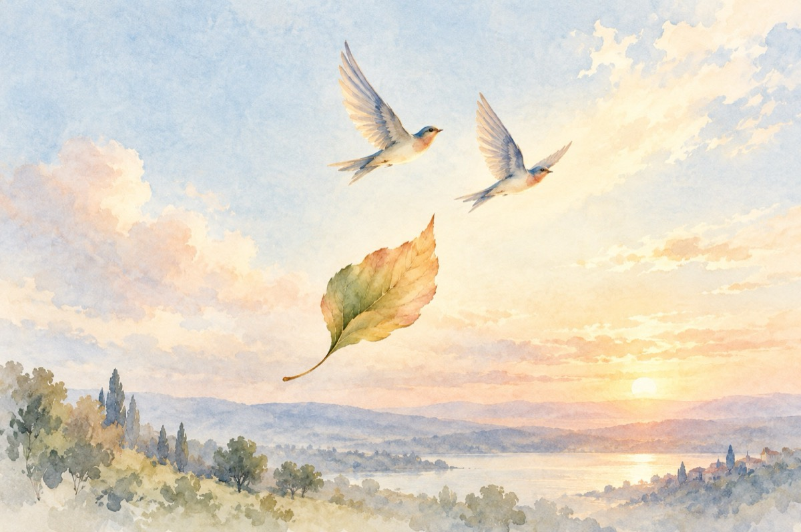

Să stăm de vorbă, iubito
Mă plimb prin trupul tău, femeie matură
Contopindu-mă în brațele tale
Salvându-ne reciproc gură la gură
Sunt unul din multele-ți petale.
Îmi tremură inima în mine
Cum ție frunza zvâcnește către soare
Să zbor cum păsările spre înălțime
Mă vei reprimi în brațele tale, oare?
Tu, de fapt, sunt eu, eu de fapt ești tu,
Câtă înțelepciune la fiecare
Ai dreptul, am dreptul să avem un atu,
Când viața noastră e pusă la încercare!
Totul cred ne vine de-acolo din cer
Apa, iubirea, zăpada, căldura și frigul,
Dar mai întâi de toate lumina, marele mister,
Cu toate că din când în când ne-ntâmpină amurgul.
Vasile Groza
Apare și în: Privește-mă în ochi (2018), D-ale lui Văsălie și Mărie.